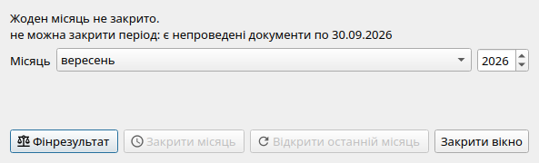

Закриття звітного місяця та фінансові результати
Регламентна процедура закриття облікового місяця завершує розрахунок фінансового результату підприємства за звітний період і захищає вже оформлені документи від випадкових або несанкціонованих змін.
Кроки закриття місяця
-
Проведіть усі первинні документи звітного місяця: реалізацію, надходження, банківські виписки, зарплату. Переконайтеся, що немає непроведених чернеток (за датами закритого місяця) — система не дасть закрити місяць, поки вони залишаються.
Виняток: документи «Рахунок на оплату» (не проводяться) та «Податкова накладна» (незареєстровані ПН можуть перейти в наступний місяць) не блокують закриття.
-
Перевірте нульовий баланс рахунків доходів і витрат: перед закриттям рахунки 701, 703, 71 (доходи) та 902, 92 (витрати) мають бути закриті на 79, а 79 — на 44. Якщо їхнє сальдо ненульове, система повідомить і запросить провести «Фінансовий результат».
-
Нарахуйте амортизацію: переконайтеся, що нараховано амортизацію ОЗ (рахунок 131) та НМА (133) за всіма картками місяця.
-
Нарахуйте заробітну плату: проведіть документ «Нарахування зарплати» за останнє число місяця.
-
Сформуйте документ «Фінансовий результат»: через меню Облік → Закритий період натисніть кнопку «Фінансовий результат». Система автоматично:
- Списує доходи: Дт 701/703/71 Кт 79;
- Списує витрати: Дт 79 Кт 902/92;
- Переносить результат на нерозподілений прибуток/збиток: Дт 79 Кт 44 (прибуток) або Дт 44 Кт 79 (збиток).
-
Встановіть дату закриття: у діалозі «Закритий період» вкажіть останній день звітного місяця та підтвердіть. Після цього жоден документ, дата якого менша або рівна даті закриття, не може бути змінений, проведений або знятий із проведення.

Діалог «Закритий період»: перевірка умов закриття, кнопка розрахунку фінансового результату та встановлення дати блокування.
Що блокує закриття місяця?
| Причина блокування |
Що необхідно зробити |
| Є непроведені чернетки з датою в межах закритого місяця |
Знайдіть чернетки у Журналі документів (статус «Не проведено»), відредагуйте та проведіть або видаліть їх. |
| Ненульовий залишок на рахунках 701, 703, 71, 902 або 92 |
Проведіть документ «Фінансовий результат» — він спише ці рахунки на 79. |
| Ненульове сальдо рахунку 79 після списання доходів/витрат |
Перевірте, чи всі витрати та доходи правильно класифіковано по рахунках. Документ «Фінансовий результат» має закрити 79 на 44. |
Зверніть увагу: рахунки 643/644 (незареєстровані ПДВ-зобов'язання та кредит) та рахунки 661/651/642/645 (розрахунки з персоналом та фондами) не блокують закриття місяця — вони є перехідними розрахунковими статтями балансу.
Місячне закриття та фінансова звітність
Після закриття кожного місяця стають доступні точні фінансові звіти в розділі «Звітність»:
- Баланс (Звіт про фінансовий стан) на перше число наступного місяця;
- Звіт про фінансові результати (P&L) за закритий місяць або наростаючим підсумком за рік;
- Відображення нерозподіленого прибутку або збитку (рахунок 44) у пасиві Балансу.